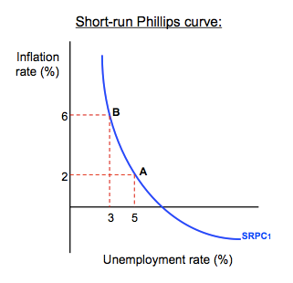
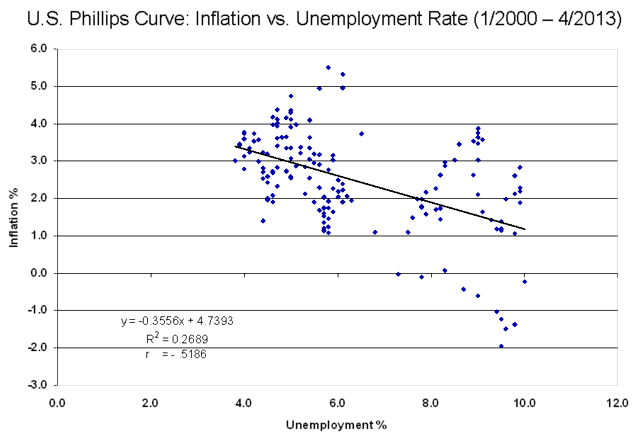
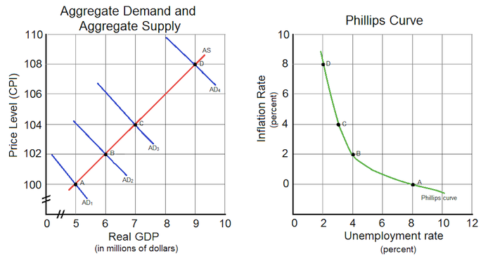
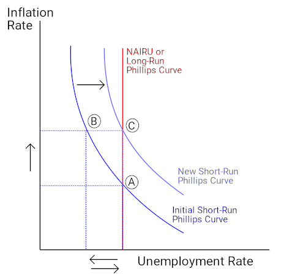
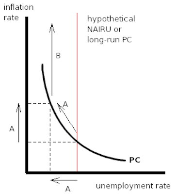
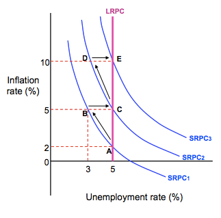
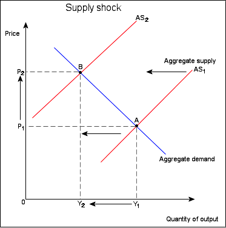
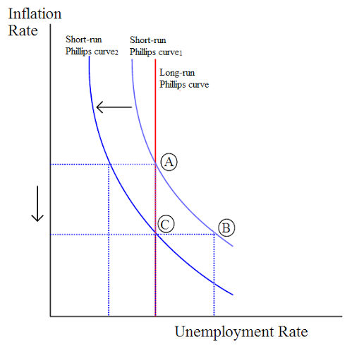

The Phillips curve shows the inverse relationship between inflation and unemployment: as unemployment decreases, inflation increases.
Review the historical evidence regarding the theory of the Phillips curve
The Phillips curve relates the rate of inflation with the rate of unemployment. The Phillips curve argues that unemployment and inflation are inversely related: as levels of unemployment decrease, inflation increases. The relationship, however, is not linear. Graphically, the short-run Phillips curve traces an L-shape when the unemployment rate is on the x-axis and the inflation rate is on the y-axis .
The Phillips curve shows the inverse trade-off between inflation and unemployment. As one increases, the other must decrease. In this image, an economy can either experience 3% unemployment at the cost of 6% of inflation, or increase unemployment to 5% to bring down the inflation levels to 2%.
The early idea for the Phillips curve was proposed in 1958 by economist A.W. Phillips. In his original paper, Phillips tracked wage changes and unemployment changes in Great Britain from 1861 to 1957, and found that there was a stable, inverse relationship between wages and unemployment. This correlation between wage changes and unemployment seemed to hold for Great Britain and for other industrial countries. In 1960, economists Paul Samuelson and Robert Solow expanded this work to reflect the relationship between inflation and unemployment. Because wages are the largest components of prices, inflation (rather than wage changes) could be inversely linked to unemployment.
The theory of the Phillips curve seemed stable and predictable. Data from the 1960's modeled the trade-off between unemployment and inflation fairly well. The Phillips curve offered potential economic policy outcomes: fiscal and monetary policy could be used to achieve full employment at the cost of higher price levels, or to lower inflation at the cost of lowered employment. However, when governments attempted to use the Phillips curve to control unemployment and inflation, the relationship fell apart. Data from the 1970's and onward did not follow the trend of the classic Phillips curve. For many years, both the rate of inflation and the rate of unemployment were higher than the Phillips curve would have predicted, a phenomenon known as "stagflation. " Ultimately, the Phillips curve was proved to be unstable, and therefore, not usable for policy purposes .
The data points in this graph span every month from January 2000 until April 2013. They do not form the classic L-shape the short-run Phillips curve would predict. Although it was shown to be stable from the 1860's until the 1960's, the Phillips curve relationship became unstable - and unusable for policy-making - in the 1970's.
Changes in aggregate demand cause movements along the Phillips curve, all other variables held constant.
Relate aggregate demand to the Phillips curve
The Phillips curve shows the inverse trade-off between rates of inflation and rates of unemployment. If unemployment is high, inflation will be low; if unemployment is low, inflation will be high.
The Phillips curve and aggregate demand share similar components. The Phillips curve is the relationship between inflation, which affects the price level aspect of aggregate demand, and unemployment, which is dependent on the real output portion of aggregate demand. Consequently, it is not far-fetched to say that the Phillips curve and aggregate demand are actually closely related.
To see the connection more clearly, consider the example illustrated by . Let's assume that aggregate supply, AS, is stationary, and that aggregate demand starts with the curve, AD_1. There is an initial equilibrium price level and real GDP output at point A. Now, imagine there are increases in aggregate demand, causing the curve to shift right to curves AD_2 through AD4. As aggregate demand increases, unemployment decreases as more workers are hired, real GDP output increases, and the price level increases; this situation describes a demand-pull inflation scenario.
As aggregate demand increases from AD1 to AD4, the price level and real GDP increases. This translates to corresponding movements along the Phillips curve as inflation increases and unemployment decreases.
As more workers are hired, unemployment decreases. Moreover, the price level increases, leading to increases in inflation. These two factors are captured as equivalent movements along the Phillips curve from points A to D. At the initial equilibrium point A in the aggregate demand and supply graph, there is a corresponding inflation rate and unemployment rate represented by point A in the Phillips curve graph. For every new equilibrium point (points B, C, and D) in the aggregate graph, there is a corresponding point in the Phillips curve. This illustrates an important point: changes in aggregate demand cause movements along the Phillips curve.
The long-run Phillips curve is a vertical line at the natural rate of unemployment, so inflation and unemployment are unrelated in the long run.
Examine the NAIRU and its relationship to the long term Phillips curve
The Phillips curve shows the trade-off between inflation and unemployment, but how accurate is this relationship in the long run? According to economists, there can be no trade-off between inflation and unemployment in the long run. Decreases in unemployment can lead to increases in inflation, but only in the short run. In the long run, inflation and unemployment are unrelated. Graphically, this means the Phillips curve is vertical at the natural rate of unemployment, or the hypothetical unemployment rate if aggregate production is in the long-run level. Attempts to change unemployment rates only serve to move the economy up and down this vertical line.
The natural rate of unemployment theory, also known as the non-accelerating inflation rate of unemployment (NAIRU) theory, was developed by economists Milton Friedman and Edmund Phelps. According to NAIRU theory, expansionary economic policies will create only temporary decreases in unemployment as the economy will adjust to the natural rate. Moreover, when unemployment is below the natural rate, inflation will accelerate. When unemployment is above the natural rate, inflation will decelerate. When the unemployment rate is equal to the natural rate, inflation is stable, or non-accelerating.
To get a better sense of the long-run Phillips curve, consider the example shown in . Assume the economy starts at point A and has an initial rate of unemployment and inflation rate. If the government decides to pursue expansionary economic policies, inflation will increase as aggregate demand shifts to the right. This is shown as a movement along the short-run Phillips curve, to point B, which is an unstable equilibrium. As aggregate demand increases, more workers will be hired by firms in order to produce more output to meet rising demand, and unemployment will decrease. However, due to the higher inflation, workers' expectations of future inflation changes, which shifts the short-run Phillips curve to the right, from unstable equilibrium point B to the stable equilibrium point C. At point C, the rate of unemployment has increased back to its natural rate, but inflation remains higher than its initial level.
Although the economy starts with an initially low level of inflation at point A, attempts to decrease the unemployment rate are futile and only increase inflation to point C. The unemployment rate cannot fall below the natural rate of unemployment, or NAIRU, without increasing inflation in the long run.
The reason the short-run Phillips curve shifts is due to the changes in inflation expectations. Workers, who are assumed to be completely rational and informed, will recognize their nominal wages have not kept pace with inflation increases (the movement from A to B), so their real wages have been decreased. As such, in the future, they will renegotiate their nominal wages to reflect the higher expected inflation rate, in order to keep their real wages the same. As nominal wages increase, production costs for the supplier increase, which diminishes profits. As profits decline, suppliers will decrease output and employ fewer workers (the movement from B to C). Consequently, an attempt to decrease unemployment at the cost of higher inflation in the short run led to higher inflation and no change in unemployment in the long run.
The NAIRU theory was used to explain the stagflation phenomenon of the 1970's, when the classic Phillips curve could not. According to the theory, the simultaneously high rates of unemployment and inflation could be explained because workers changed their inflation expectations, shifting the short-run Phillips curve, and increasing the prevailing rate of inflation in the economy. At the same time, unemployment rates were not affected, leading to high inflation and high unemployment.
The short-run Phillips curve depicts the inverse trade-off between inflation and unemployment.
Interpret the short-run Phillips curve
The Phillips curve depicts the relationship between inflation and unemployment rates. The long-run Phillips curve is a vertical line that illustrates that there is no permanent trade-off between inflation and unemployment in the long run. However, the short-run Phillips curve is roughly L-shaped to reflect the initial inverse relationship between the two variables . As unemployment rates increase, inflation decreases; as unemployment rates decrease, inflation increases.
The short-run Phillips curve shows that in the short-term there is a tradeoff between inflation and unemployment. Contrast it with the long-run Phillips curve (in red), which shows that over the long term, unemployment rate stays more or less steady regardless of inflation rate.
Consider the example shown in . When the unemployment rate is 2%, the corresponding inflation rate is 10%. As unemployment decreases to 1%, the inflation rate increases to 15%. On the other hand, when unemployment increases to 6%, the inflation rate drops to 2%.
During the 1960's, the Phillips curve rose to prominence because it seemed to accurately depict real-world macroeconomics. However, the stagflation of the 1970's shattered any illusions that the Phillips curve was a stable and predictable policy tool. Nowadays, modern economists reject the idea of a stable Phillips curve, but they agree that there is a trade-off between inflation and unemployment in the short-run. Given a stationary aggregate supply curve, increases in aggregate demand create increases in real output. As output increases, unemployment decreases. With more people employed in the workforce, spending within the economy increases, and demand-pull inflation occurs, raising price levels.
Therefore, the short-run Phillips curve illustrates a real, inverse correlation between inflation and unemployment, but this relationship can only exist in the short run . The idea of a stable trade-off between inflation and unemployment in the long run has been disproved by economic history.
There are two theories of expectations (adaptive or rational) that predict how people will react to inflation.
Distinguish adaptive expectations from rational expectations
The short-run Phillips curve is said to shift because of workers' future inflation expectations. Yet, how are those expectations formed? There are two theories that explain how individuals predict future events.
To fully appreciate theories of expectations, it is helpful to review the difference between real and nominal concepts. Anything that is nominal is a stated aspect. In contrast, anything that is real has been adjusted for inflation. To make the distinction clearer, consider this example. Suppose you are opening a savings account at a bank that promises a 5% interest rate. This is the nominal, or stated, interest rate. However, suppose inflation is at 3%. The real interest rate would only be 2% (the nominal 5% minus 3% to adjust for inflation).
The difference between real and nominal extends beyond interest rates. In an earlier atom, the difference between real GDP and nominal GDP was discussed. The distinction also applies to wages, income, and exchange rates, among other values.
The theory of adaptive expectations states that individuals will form future expectations based on past events. For example, if inflation was lower than expected in the past, individuals will change their expectations and anticipate future inflation to be lower than expected.
To connect this to the Phillips curve, consider . Assume the economy starts at point A at the natural rate of unemployment with an initial inflation rate of 2%, which has been constant for the past few years. Accordingly, because of the adaptive expectations theory, workers will expect the 2% inflation rate to continue, so they will incorporate this expected increase into future labor bargaining agreements. This way, their nominal wages will keep up with inflation, and their real wages will stay the same.
According to adaptive expectations theory, policies designed to lower unemployment will move the economy from point A through point B, a transition period when unemployment is temporarily lowered at the cost of higher inflation. However, eventually, the economy will move back to the natural rate of unemployment at point C, which produces a net effect of only increasing the inflation rate.According to rational expectations theory, policies designed to lower unemployment will move the economy directly from point A to point C. The transition at point B does not exist as workers are able to anticipate increased inflation and adjust their wage demands accordingly.
Now assume that the government wants to lower the unemployment rate. To do so, it engages in expansionary economic activities and increases aggregate demand. As aggregate demand increases, inflation increases. Because of the higher inflation, the real wages workers receive have decreased. For example, assume each worker receives \$100, plus the 2% inflation adjustment. Each worker will make \$102 in nominal wages, but \$100 in real wages. Now, if the inflation level has risen to 6%. Workers will make \$102 in nominal wages, but this is only \$96.23 in real wages.
Although the workers' real purchasing power declines, employers are now able to hire labor for a cheaper real cost. Consequently, employers hire more workers to produce more output, lowering the unemployment rate and increasing real GDP. On , the economy moves from point A to point B.
However, workers eventually realize that inflation has grown faster than expected, their nominal wages have not kept pace, and their real wages have been diminished. They demand a 4% increase in wages to increase their real purchasing power to previous levels, which raises labor costs for employers. As labor costs increase, profits decrease, and some workers are let go, increasing the unemployment rate. Graphically, the economy moves from point B to point C.
This example highlights how the theory of adaptive expectations predicts that there are no long-run trade-offs between unemployment and inflation. In the short run, it is possible to lower unemployment at the cost of higher inflation, but, eventually, worker expectations will catch up, and the economy will correct itself to the natural rate of unemployment with higher inflation.
The theory of rational expectations states that individuals will form future expectations based on all available information, with the result that future predictions will be very close to the market equilibrium. For example, assume that inflation was lower than expected in the past. Individuals will take this past information and current information, such as the current inflation rate and current economic policies, to predict future inflation rates.
As an example of how this applies to the Phillips curve, consider again. Assume the economy starts at point A, with an initial inflation rate of 2% and the natural rate of unemployment. However, under rational expectations theory, workers are intelligent and fully aware of past and present economic variables and change their expectations accordingly. They will be able to anticipate increases in aggregate demand and the accompanying increases in inflation. As such, they will raise their nominal wage demands to match the forecasted inflation, and they will not have an adjustment period when their real wages are lower than their nominal wages. Graphically, they will move seamlessly from point A to point C, without transitioning to point B.
In essence, rational expectations theory predicts that attempts to change the unemployment rate will be automatically undermined by rational workers. They can act rationally to protect their interests, which cancels out the intended economic policy effects. Efforts to lower unemployment only raise inflation.
Aggregate supply shocks, such as increases in the costs of resources, can cause the Phillips curve to shift.
Give examples of aggregate supply shock that shift the Phillips curve
The Phillips curve shows the relationship between inflation and unemployment. In the short-run, inflation and unemployment are inversely related; as one quantity increases, the other decreases. In the long-run, there is no trade-off. In the 1960's, economists believed that the short-run Phillips curve was stable. By the 1970's, economic events dashed the idea of a predictable Phillips curve. What could have happened in the 1970's to ruin an entire theory? Stagflation caused by a aggregate supply shock.
Stagflation is a combination of the words "stagnant" and "inflation," which are the characteristics of an economy experiencing stagflation: stagnating economic growth and high unemployment with simultaneously high inflation. The stagflation of the 1970's was caused by a series of aggregate supply shocks. In this case, huge increases in oil prices by the Organization of Petroleum Exporting Countries (OPEC) created a severe negative supply shock. The increased oil prices represented greatly increased resource prices for other goods, which decreased aggregate supply and shifted the curve to the left . As aggregate supply decreased, real GDP output decreased, which increased unemployment, and price level increased; in other words, the shift in aggregate supply created cost-push inflation.
In this example of a negative supply shock, aggregate supply decreases and shifts to the left. The resulting decrease in output and increase in inflation can cause the situation known as stagflation.
The aggregate supply shocks caused by the rising price of oil created simultaneously high unemployment and high inflation. At the time, the dominant school of economic thought believed inflation and unemployment to be mutually exclusive; it was not possible to have high levels of both within an economy. Consequently, the Phillips curve could not model this situation. For high levels of unemployment, there were now corresponding levels of inflation that were higher than the Phillips curve predicted; the Phillips curve had shifted upwards and to the right. Thus, the Phillips curve no longer represented a predictable trade-off between unemployment and inflation.
Disinflation is a decline in the rate of inflation, and can be caused by declines in the money supply or recessions in the business cycle.
Identify situations with disinflation
Inflation is the persistent rise in the general price level of goods and services. Disinflation is a decline in the rate of inflation; it is a slowdown in the rise in price level. As an example, assume inflation in an economy grows from 2% to 6% in Year 1, for a growth rate of four percentage points. In Year 2, inflation grows from 6% to 8%, which is a growth rate of only two percentage points. The economy is experiencing disinflation because inflation did not increase as quickly in Year 2 as it did in Year 1, but the general price level is still rising. Disinflation is not to be confused with deflation, which is a decrease in the general price level.
Disinflation can be caused by decreases in the supply of money available in an economy. It can also be caused by contractions in the business cycle, otherwise known as recessions. The Phillips curve can illustrate this last point more closely. Consider an economy initially at point A on the long-run Phillips curve in . Suppose that during a recession, the rate that aggregate demand increases relative to increases in aggregate supply declines. This reduces price levels, which diminishes supplier profits. As profits decline, employers lay off employees, and unemployment rises, which moves the economy from point A to point B on the graph. Eventually, though, firms and workers adjust their inflation expectations, and firms experience profits once again. As profits increase, employment also increases, returning the unemployment rate to the natural rate as the economy moves from point B to point C. The expected rate of inflation has also decreased due to different inflation expectations, resulting in a shift of the short-run Phillips curve.
Disinflation can be illustrated as movements along the short-run and long-run Phillips curves.
To illustrate the differences between inflation, deflation, and disinflation, consider the following example. Assume the following annual price levels as compared to the prices in year 1:
As the economy moves through Year 1 to Year 4, there is a continued growth in the price level. This is an example of inflation; the price level is continually rising. However, between Year 2 and Year 4, the rise in price levels slows down. Between Year 2 and Year 3, the price level only increases by two percentage points, which is lower than the four percentage point increase between Years 1 and 2. The trend continues between Years 3 and 4, where there is only a one percentage point increase. This is an example of disinflation; the overall price level is rising, but it is doing so at a slower rate.
Between Years 4 and 5, the price level does not increase, but decreases by two percentage points. This is an example of deflation; the price rise of previous years has reversed itself.
{kind=link}
{kind=link}
{kind=link}
{kind=link}
{kind=link}
{kind=link}
{kind=link}
{kind=link}